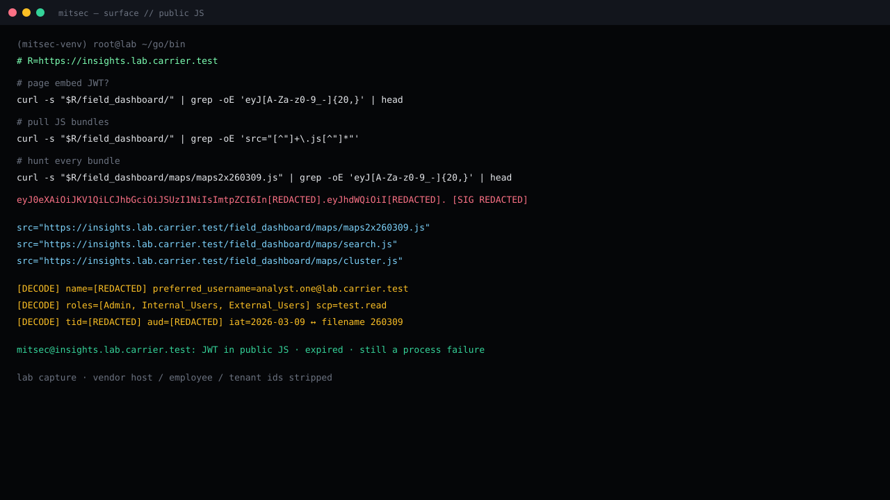

Summary
A Microsoft Entra ID access token sat in a JavaScript file that anyone could fetch. No login. The payload carried an employee display name, corporate mailbox, object id, tenant id, application id, and roles that included Admin.
The token in the lab copy was already expired. That does not close the finding. Shipping a live employee token into a production bundle is a build-process failure. The filename itself encoded the issue date (maps2x260309.js ↔ 9 March 2026).
Lab frame
Terminal rebuilt from the capture. Host, mailbox and token body replaced.

Affected lab asset
- Host:
https://insights.lab.carrier.test/field_dashboard/ - Bundle:
/field_dashboard/maps/maps2x260309.js
What the hunt printed
# page embed JWT? curl -s "$R/field_dashboard/" | grep -oE 'eyJ[A-Za-z0-9_-]{20,}' | head # pull JS bundles curl -s "$R/field_dashboard/" | grep -oE 'src="[^"]+\.js[^"]*"' # hunt the dated bundle curl -s "$R/field_dashboard/maps/maps2x260309.js" | grep -oE 'eyJ[A-Za-z0-9_-]{20,}' eyJ0eXAiOiJKV1QiLCJhbGciOiJSUzI1NiIsImtpZCI6In[REDACTED].eyJhdWQiOiI[REDACTED].[SIG REDACTED] mitsec@insights.lab.carrier.test:
Decoded claims of interest
| Claim | Lab value |
|---|---|
| name | [REDACTED] |
| preferred_username | analyst.one@lab.carrier.test |
| oid | [REDACTED] |
| roles | Admin, Internal_Users, External_Users |
| scp | test.read |
| tid / aud | [REDACTED] |
| iat → exp | 2026-03-09 23:31 → 2026-03-10 00:37 UTC |
| alg | RS256 · issuer = login.microsoftonline.com / {tid} / v2.0 |
The iat day matches the 260309 stamp in the filename. That is a developer token that rode the build out the door.
Impact
- Employee PII in a file the CDN will cache.
- Authorization model leaked: an
Adminrole exists on that app registration. - Tenant id and client id become free reconnaissance.
- Process failure — if one live token shipped, scan the rest of the host and the pipeline.
The copy recovered here was expired. No replay. The disclosure is still a privacy and SDLC issue.
Fix
- Strip every hardcoded JWT from JS and HTML. Rotate anything tied to that session.
- Scan the host and staging for
eyJ, client secrets, connection strings. - CI secret scanning plus a pre-commit block on JWT / well-known secret shapes.
- Tokens stay in memory after a proper OIDC dance. They do not live in a dated bundle name.